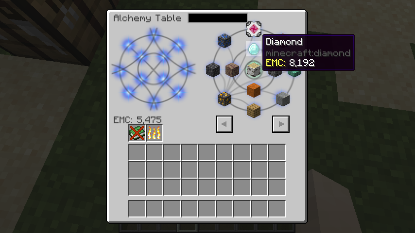
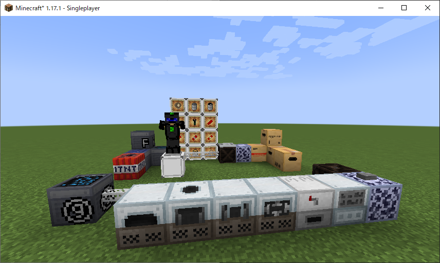
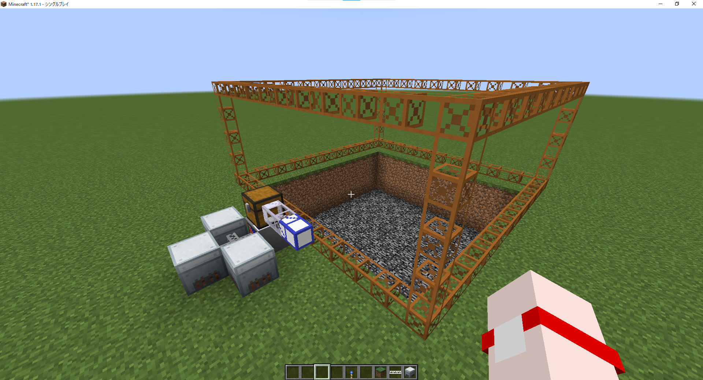
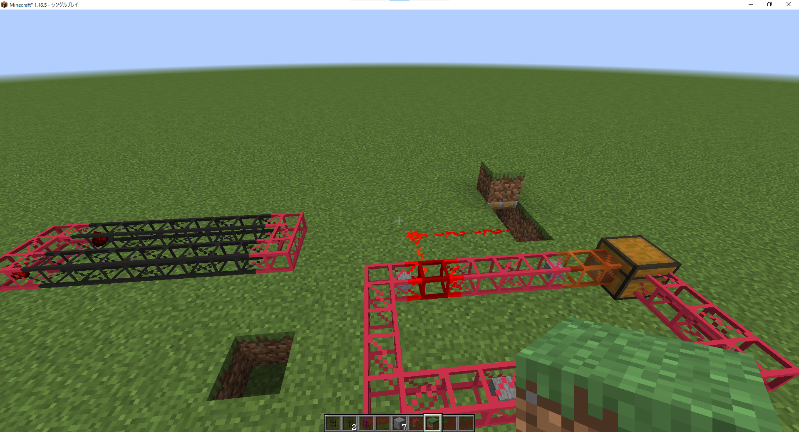

MODの紹介
※ここで紹介するMODは一部のみです。こちらから私の配布しているMODを見ることができます。
必ず、依存関係(前提MOD)をダウンロードしてください。前提MODを入れないと動作しません。
私の殆どのMODがMCPitanLibを必要とします。
Fabricの場合はFabric APIが必要です。
MCPitanLibはArchitectury APIも前提としているので注意
Item Alchemy

MOD名: Item Alchemy
配布先: CurseForge, Modrinth
MODローダー: Fabric
対応バージョン: 1.18～1.21.1
MOD詳細: Pitan Mod Wiki
このMODはFabric用にProjectEのようなEMCシステムと等価交換できる賢者の石などを追加します。
主に、「錬金テーブル」、「EMCコレクター」、「EMCコンデンサー」といったブロック、アイテムが追加されます。
本家とは違ってProjectEのアドオンであるPEAAのAEGUも追加します。
開発中のため、ProjectEにあるすべてのアイテムを追加せず、一部のみとなっています。
使い方は以下の動画か、Wiki(MOD詳細)を確認してください。
Simple Uncrafting Table
MOD名: Simple Uncrafting Table
配布先: CurseForge, Modrinth
MODローダー: Fabric/Forge/NeoForge
対応バージョン: 1.18～1.21.1
MOD詳細: Pitan Mod Wiki
クラフトしたアイテムを元の素材に戻すUncrafting Tableを追加します。
元々はFabric用に作りましたが、Forgeも欲しいという声があり、両対応させました。
Advanced Reborn

MOD名: Advanced Reborn
配布先: CurseForge, Modrinth
MODローダー: Fabric
対応バージョン: 1.18～1.21.1
MOD詳細: Pitan Mod Wiki
Tech Rebornのアドオンで数個のマシンと充電パッドなど僕がほしいなと思ったものを追加します。
CC: Restitched/Tweakedを入れている場合、TRの鉱石ツールのタートルを追加します。
使い方は以下の動画か、Wiki(MOD詳細)を確認してください。
Enhanced Quarries

MOD名: Enhanced Quarries
配布先: CurseForge, Modrinth
MODローダー: Fabric
対応バージョン: 1.18～1.21.1
MOD詳細: Pitan Mod Wiki
BCのようなクァーリーやフィラー、ポンプなどを追加します。
1.19.4からは試験的にビルダーなども追加します。
使い方は以下の動画か、Wiki(MOD詳細)を確認してください。
PipePlus

MOD名: PipePlus
配布先: CurseForge, Modrinth
MODローダー: Fabric
対応バージョン: 1.18～1.21
MOD詳細: Pitan Mod Wiki
Simple BC Pipesのアドオンです。
吸収パイプ、抽出パイプ、テレポートパイプなどを追加します。